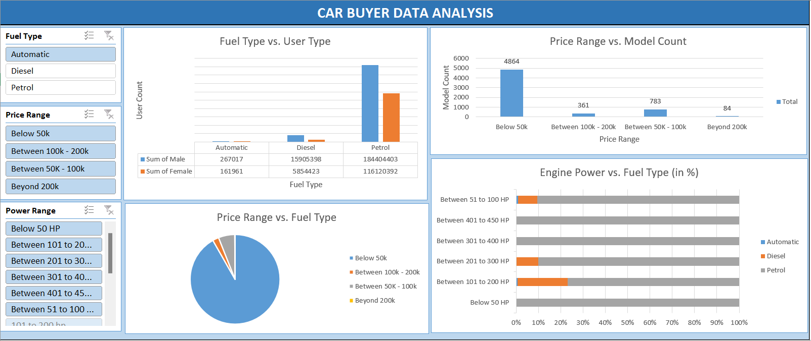

Detailed Project Information
Project involves the comprehensive analysis of car buyer data, utilizing the powerful data manipulation and
visualization capabilities of Microsoft Excel. The primary objectives are to clean the raw data, analyze key
metrics, and create an interactive dashboard that provides valuable insights into car buyer trends and
patterns.

Steps followed:
1. Data Collection
- Source Data: Gather all necessary data that will be used in the dashboard. This can
include data from different sources (CSV, databases, external APIs, etc.).
- Import Data: Import the data into Excel using the Get & Transform Data
(Power Query) feature or by directly opening CSV files or other sources.
2. Data Cleaning
- Remove Duplicates: Identify and remove any duplicate rows in the dataset.
- Handle Missing Data: Identify any missing or null values and decide how to handle them
(e.g., remove rows, fill with averages, or forward-fill).
- Standardize Data: Ensure consistent formatting for columns (e.g., date formats,
currency symbols, etc.).
- Outlier Detection: Look for any outliers that might skew analysis and decide how to
address them (e.g., remove or adjust).
- Create New Columns: Derive new columns if necessary (e.g., age from a date of birth,
year and month from a date).
- Validate Data: Ensure that the data makes sense and matches expectations (e.g., check
for negative sales values if not expected).
3. Data Transformation
- Pivot Tables: Create pivot tables to aggregate data as needed (e.g., total sales by
region, category, or time period).
- Data Consolidation: If the data is spread across multiple sheets, combine or merge
relevant data into a single table or a few tables that can be easily referenced.
- Data Grouping: Group data logically (e.g., by year, quarter, region, or category) to
simplify analysis.
- Calculate Metrics: Create additional columns for calculated metrics (e.g., growth rate,
average sales, percentage contribution).
4. Design the Dashboard Layout
- Plan the Structure: Decide on the layout for the dashboard—consider what metrics,
trends, or KPIs should be displayed.
- Use a Clear Grid: Set up a clean and simple grid layout that separates different
sections (charts, tables, filters).
- Space for Visualizations: Ensure there is enough space for visual elements (charts,
graphs) to stand out.
5. Create Data Visualizations
- Charts: Choose the appropriate chart type for each visualization (e.g., bar, line, pie,
or area charts) based on the data and insight we want to highlight.
- Tables: Create summary tables where necessary (e.g., key metrics, KPIs, or aggregated
data).
- Conditional Formatting: Use conditional formatting (color scales, icon sets) to make
data easier to interpret.
- Sparklines: Add sparklines to represent trends in small data points within a cell
(e.g., sales trends).
- Dynamic Charts: Create dynamic charts that update automatically when data changes or
when filters are applied.
6. Interactive Features
- Slicers: Add slicers to allow users to filter data by categories like region, date, or
product.
- Drop-Down Lists: Use data validation with drop-down lists for easier selection of
filters.
- Pivot Chart: Link pivot tables with pivot charts so that both adjust dynamically with
slicer selections.
- Interactive Buttons: If needed, we can use form controls like buttons for navigation
or actions (e.g., clearing filters).
7. Refine Aesthetics
- Color Scheme: Use a consistent and professional color scheme to make the dashboard
visually appealing and easy to read.
- Fonts: Choose clear and readable fonts for labels, titles, and data points.
- Title & Labels: Add titles to our dashboard and each chart/table for clarity.
Label axes and add legends where necessary.
- Alignment: Ensure all elements are properly aligned, and the layout is clean without
being cluttered.
8. Finalize the Dashboard
- Check Interactivity: Test the interactivity of slicers, drop-downs, and any dynamic
elements to ensure they work as intended.
- Performance: Ensure that the dashboard loads and updates quickly, especially if large
datasets are used.
- Feedback: Get feedback from stakeholders or colleagues to ensure the dashboard meets
their needs and is easy to understand.
9. Sharing & Publishing
- Save and Share: Save our dashboard as an Excel file, and share it with stakeholders.
We can also save it as a PDF for easy sharing.
- Publishing Online: If needed, publish the dashboard to SharePoint or Excel Online for
collaborative viewing and updates.